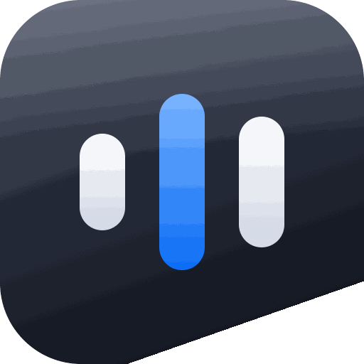
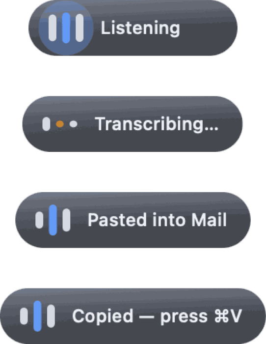
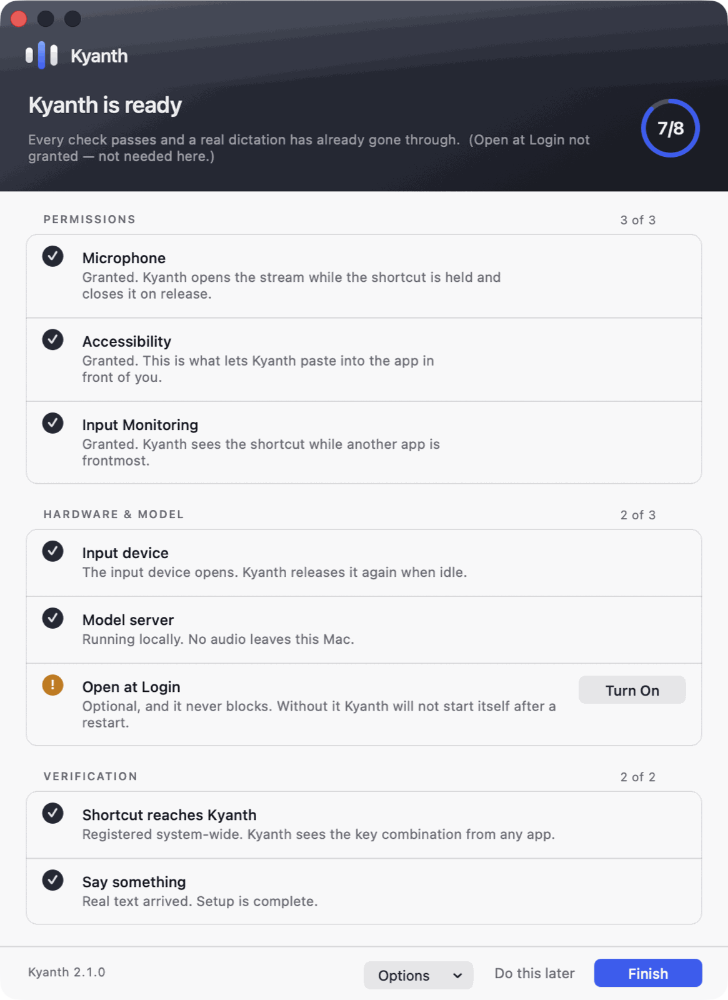
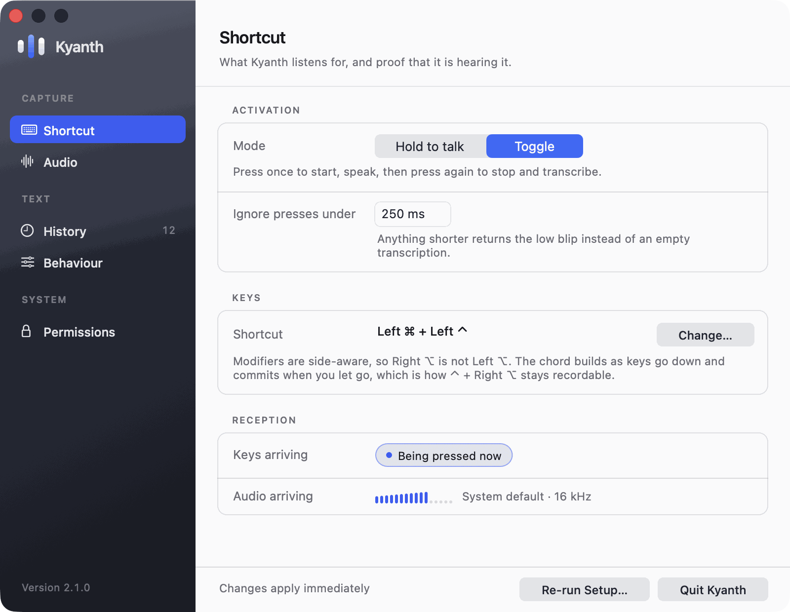
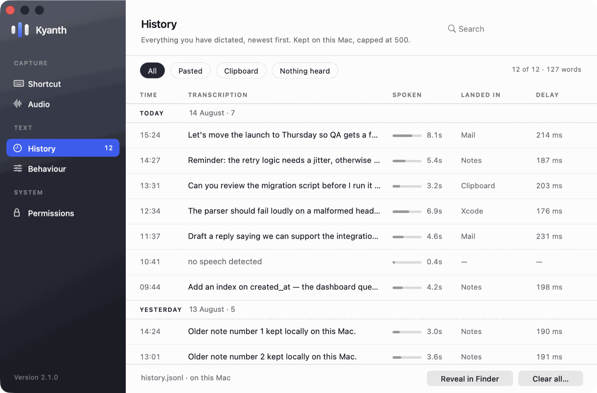

No account
Nothing to sign up for. Download it and it works.
Kyanth is push-to-talk dictation for macOS that runs entirely on your Mac. Release the key and the text lands in whatever app you are using — in about 200 milliseconds. No account, no subscription, and your audio never leaves the machine.

How it works
Kyanth lives in the menu bar. There is no window to switch to, no button to find, and nothing to copy and paste.
Any key or chord you like. Modifier-only combinations such as Right ⌥ work best — they cannot be typed, so binding one steals nothing from other apps.
A small pill appears and shows your live input level, so a microphone that is hearing nothing looks obviously different from one that works.
The text is pasted into the focused field and your previous clipboard is put back. Typically 200 ms from key-up to text on screen.
On screen
Silence is the worst failure mode a dictation tool can have. Every outcome says so in words — including the ones that went wrong.
Listening, transcribing, pasted, copied to the clipboard, nothing heard, something went wrong. You never have to guess which one you got.
The three bars are the input meter. The centre bar carries your live level and the outer two replay it a few frames later, so a syllable travels outward across the mark.
It floats above other windows without ever taking focus — a dictation overlay that stole focus would redirect your speech into itself.

The app
Hand-drawn AppKit, two appearances, and a setup process that refuses to call itself finished until it has proof.
Eight checks in three groups, re-evaluated every second — flip a switch in System Settings and the row turns without a relaunch.
The last check is the one that matters: Finish stays disabled until a real dictation has produced real text. Green permissions prove configuration, not function.

Pick any shortcut. Modifiers are side-aware, so Right ⌥ is not Left ⌥, and chords commit when you let go rather than on the first key down.
A live indicator lights the moment Kyanth receives exactly your chord. It is the only way to tell a wrong shortcut apart from one another app swallowed first.

Time, transcription, how long you spoke, where it landed and how long the model took — as columns, not one crushed string.
Search filters as you type. Click any row to expand it in place, with copy, paste-again and delete. Nothing truncates.
Stored as a plain JSONL file on your Mac that you can read or delete at any time.

Privacy
There is no server to trust, because there is no server. The speech model ships inside the app and runs on your own hardware.
Nothing to sign up for. Download it and it works.
The only connection is to 127.0.0.1 — the transcription engine inside the app.
No analytics, no crash reporting, no phone-home.
The input device opens on your first press and closes after 30 seconds idle, so the macOS recording indicator is not on while you work.
Plain JSONL under Application Support, capped at 500 entries. Delete it whenever you like.
A Developer ID build that opens with no Gatekeeper warning and keeps its permission grants across updates.
Cloud dictation is a subscription, an account, and a copy of everything you have ever said sitting on somebody else's disk. Kyanth is a 170 MB app that does the same job with none of that.
Free, open source, and self-contained — Python, the speech model and the transcription engine all ship inside the app. No Homebrew, nothing to build.